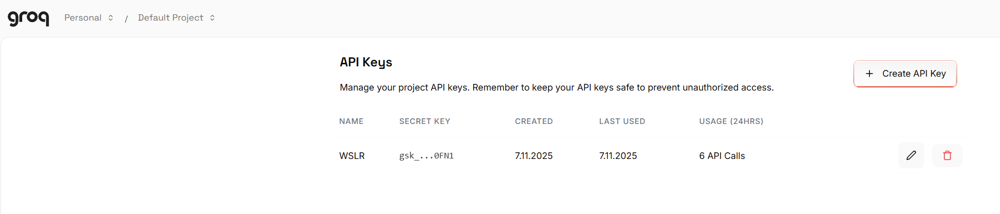

<!doctype html>
<html lang="de">
  <head>
    <meta charset="utf-8">

		<title>Stabi Tool Tuesday</title>

		<meta name="description" content="A colaborative learning space for all things DH">
		<meta name="author" content="Roman Kuhn">

		<meta name="apple-mobile-web-app-capable" content="yes">
		<meta name="apple-mobile-web-app-status-bar-style" content="black-translucent">

		<meta name="viewport" content="width=device-width, initial-scale=1.0, maximum-scale=1.0, user-scalable=no, minimal-ui">

    <link rel="stylesheet" href="dist/reveal.css">
    <link rel="stylesheet" href="dist/theme/white.css">
  </head>
  <body>
    <div class="reveal">
      <div class="slides">
         <section data-markdown data-separator="^\n---\n" data-separator-vertical="^\n--\n" data-separator-vertical="^\n--\n" data-charset="utf-8">
          <script type="text/template">
          <!--content goes here-->

          ## Stabi Tool Tuesday
          ### 2 - Datenstrukturierung mit OpenRefine <!-- .element: class="fragment" -->
          11.11.2025

          ---
          ### Tool Tuesday
          Ein kollaborativer Raum, um DH-Methoden und tools zu diskutieren... auszuprobieren... zu experimentieren...

          ...manchmal auch zu scheitern?

          --
          ### no code
          (für den Moment jedenfalls)

          --
          Folien und weitere Materialien finden sich hier: https://github.com/stabiberlin/tooltuesday

          Die heutigen Folien hier: https://stabiberlin.github.io/tooltuesday/slides/OpenRefine.html


---
### Überblick über die Reihe
jeden zweiten Dienstag

im Moment sechs Termine fest geplant:
* Datenquellen und Schnittstellen
* **Datenstrukturierung mit OpenRefine**
* OCR/HTR
* Named Entity Recognition (NER)
* Netzwerkvisualierung (Gephi)
* Topic Modeling


--
Orientiert an einer (prototypischen) DH-'pipeline'

Forschungsidee/Forschungsfrage

&#8618; Daten suchen (und finden); Daten generieren

&#8618; Daten aufbereiten

&#8618; Daten auswerten, transformieren

&#8618; Ergebnisse (und neue Daten) publizieren/visualisieren

--
Weitere Termine/Themen bei Bedarf

Bring your own data


---
### Datenstrukturierung mit OpenRefine

Bereinigung und Umwandlung von *strukturierten* Daten

Daten anreichern

Unstrukturierten Text (re)strukturieren

---

https://openrefine.org/

Installation: https://openrefine.org/docs/manual/installing

---
### Einstieg, Datenbereinigung


--

#### Einstieg, Datenbereinigung
- Import
- Filter
- Facetten
- Sortieren
- Daten korrigieren
- Datentypen anpassen

--

#### Einstieg, Datenbereinigung

Daten Clustern


--

#### Einstieg, Datenbereinigung

- Export
- Speichern
- Import
- Undo/Redo

---

## Arbeiten mit Strukturierten Daten

#### Schnittstellenabfrage

[Nachlass Jean Paul](https://kalliope-verbund.info/findingaid?fa.id=DE-611-BF-3872&fa.enum=1)

<pre><code> https://kalliope-verbund.info/sru?version=1.2&operation=searchRetrieve&query=ead.archdesc.id=%22DE-611-BF-3872%22&recordSchema=dc&maximumRecords=20
</code></pre>

[Abfrage Korrespondenz](https://kalliope-verbund.info/sru?version=1.2&operation=searchRetrieve&query=ead.archdesc.id=%22DE-611-BF-3872%22&recordSchema=dc&maximumRecords=17&startRecord=616)

[Schnittstellenbeschreibung](https://lab.sbb.berlin/kpe/)

--

#### Schnittstellenabfrage

- Record vs. Row
- Filtern
- Join/Split

---

#### Textmanipulationen

[Brief von Magnus Hirschfeld an Gerhart Hauptmann](https://digital.staatsbibliothek-berlin.de/werkansicht?PPN=PPN771823622&PHYSID=PHYS_0001&DMDID=)


--

#### Textmanipulationen
- split
- replace
- Reguläre Ausdrücke 
(https://regex101.com https://regexlearn.com/)


---

## Unstrukturierten Text (re)strukturieren 
--


---

### Beispiel #4
#### Reconciliation

[Reconciliation Services](https://reconciliation-api.github.io/testbench/#/)

--


---

### Teaser
#### KI & OpenRefine

--

API Key



--

#### KI & OpenRefine


--

#### KI & OpenRefine

Prompt:
<div style="overflow:scroll; height:600px;">

You are an expert in historical newspapers and historical womens' rights movements.

You will read the OCRed page of a historical newspaper, dating from 1870 to 1910. In some sections "suffrage" should be mentioned.

There will be OCR errors in the text - try to ignore them as best as possible. 

Please summarize the relevant sections. Do not return the text of the relevant section.

</div>

--

#### KI & OpenRefine


---
### Weitere Informationen

[OpenRefine-Dokumentation](https://openrefine.org/docs)

[OpenRefine-Forum](https://forum.openrefine.org/)

[LibraryCarpentry-Lesson](https://librarycarpentry.github.io/lc-open-refine/)


---

## Danke für die Aufmerksamkeit

25.11.2024: OCR/HTR

</section>
         
        </script>
        
      </div></div></body>
    </div>
    <script src="raphael-min.js"><
      <script src="flowchart-latest.js"></script>
    <script src="dist/reveal.js"></script>
    <script src="plugin/markdown/markdown.js"></script>
    
    <script>
      Reveal.initialize({
    plugins: [ RevealMarkdown ]
  });
    </script>
  </body>
</html>